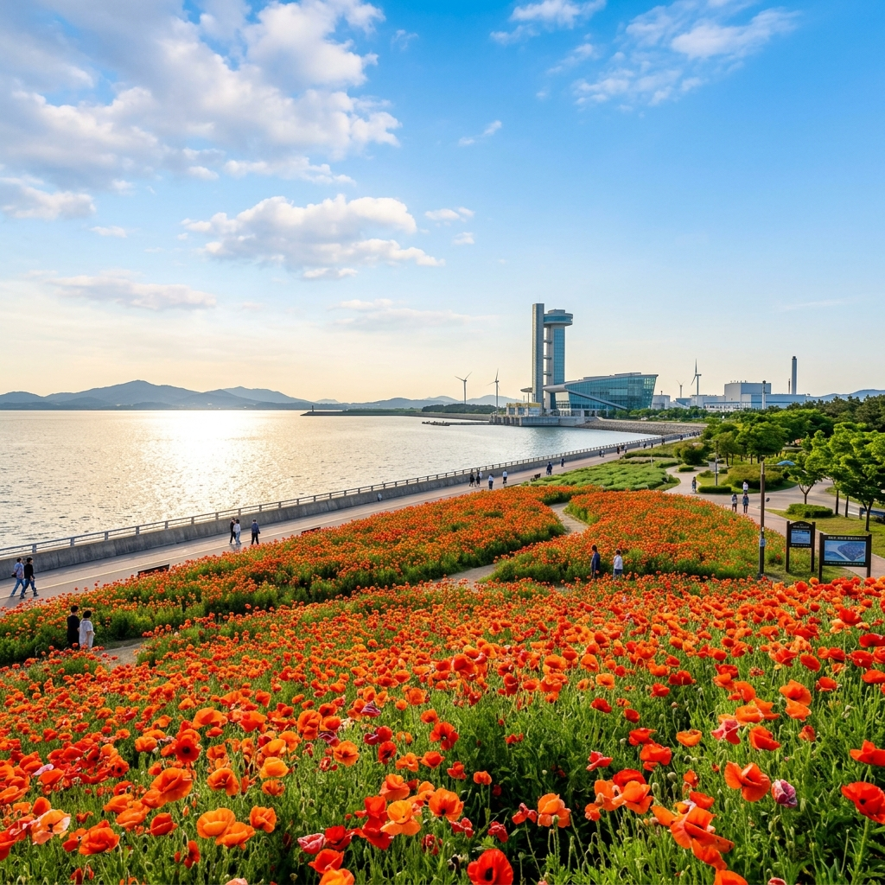
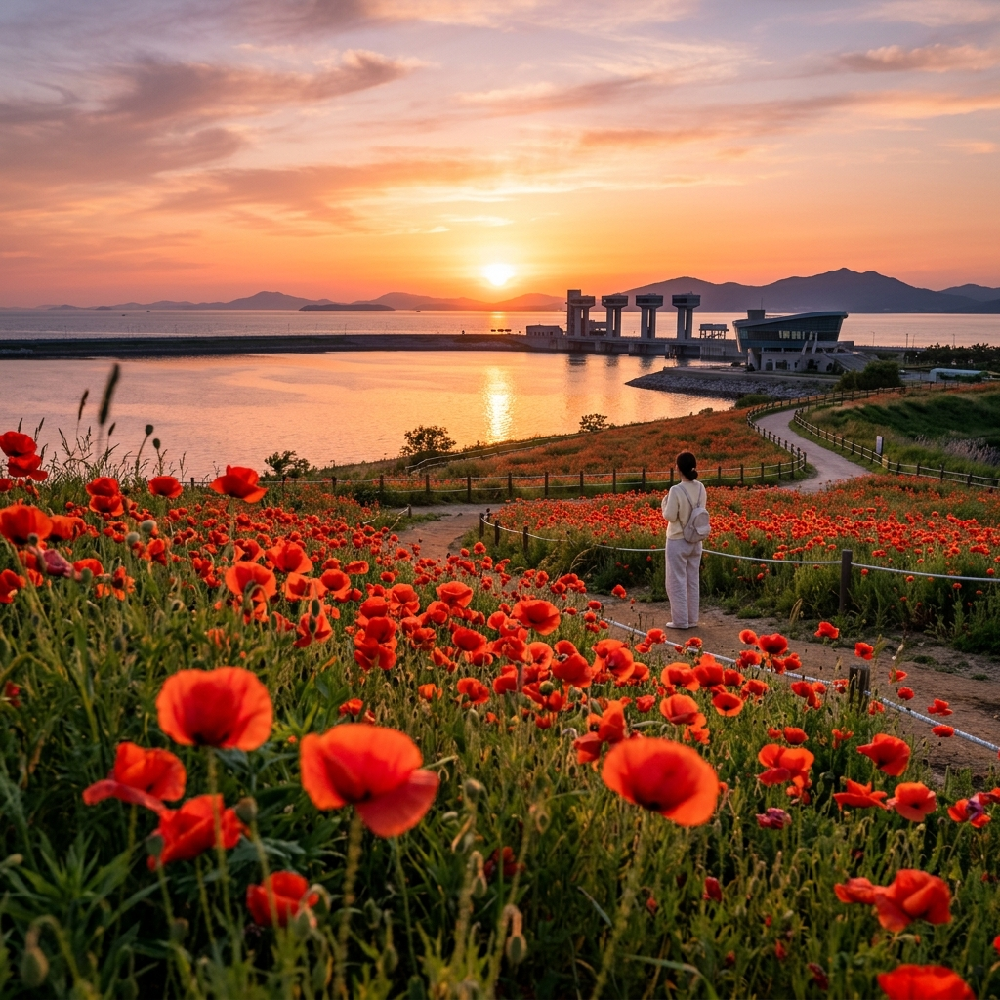
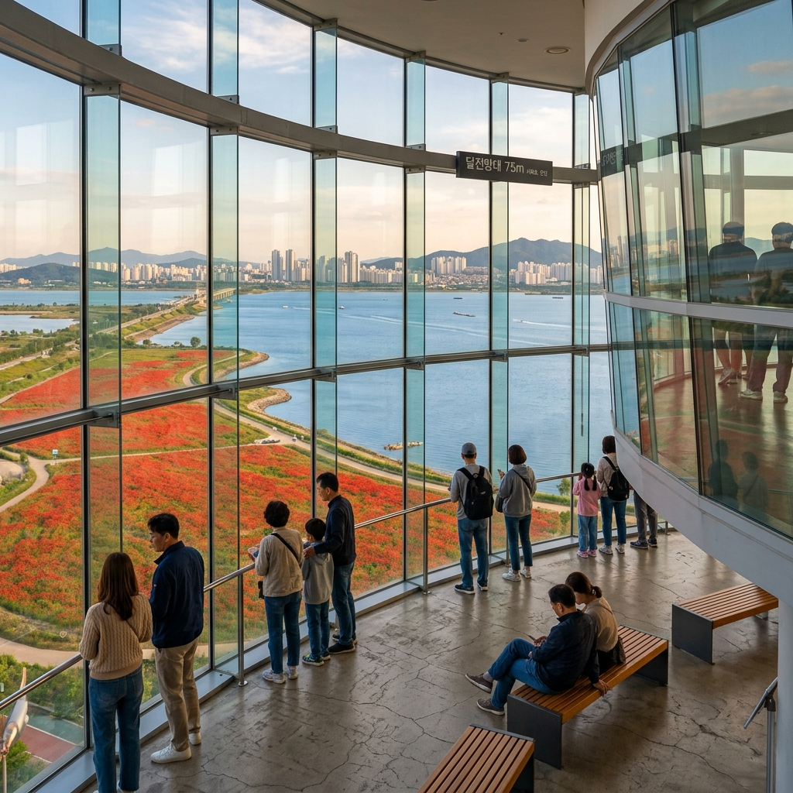

안산 시화나래 양귀비 2026 — 시화호 물빛과 붉은 꽃의 환상 조화 인생샷 완벽 가이드
수도권에서 한 시간, 경기도 안산의 시화나래 조력발전소 공원에 매년 5월 말이 되면 그림 같은 양귀비 군락이 펼쳐집니다. 드넓은 시화호의 파란 물빛을 배경으로 붉고 주홍빛 양귀비가 물결치는 이 풍경은, SNS에서 꾸준히 '수도권 최고 봄꽃 인생샷 명소'로 회자되고 있습니다. 거기에 75m 높이의 달전망대와 세계 최대 규모의 조력발전소까지 더하면, 단순한 꽃 구경을 넘어선 알찬 반나절 나들이가 완성됩니다.
01. 시화나래란? — 조력발전소가 만들어낸 꽃의 공원
시화나래(Sihwanarae)는 경기도 안산시 단원구 대부황금로 17에 위치한 복합 관광 공간입니다. 한국수자원공사(K-water)가 시화방조제 위에 조성한 시화호 조력발전소 공원이 그 주인공으로, 2011년 세계 최대 규모로 준공된 시화호 조력발전소를 기반으로 만들어졌습니다.
시화호 조력발전소는 연간 약 553GWh의 전력을 생산하는 친환경 에너지 시설로, 바다의 조석 차이를 이용해 전기를 만들어냅니다. 이 거대한 기반 시설 위에 조성된 공원은 조경이 매우 잘 되어 있으며, 봄이면 다양한 야생화와 꽃이 잔디 광장과 방조제 둑길을 따라 만개합니다.
그 중에서도 양귀비(개양귀비)는 5월 말 시화나래를 대표하는 꽃입니다. 바닷바람을 맞으며 자라는 탓에 내륙의 양귀비보다 꽃잎이 더 선명하고 색이 짙다는 것이 마니아들 사이의 공통된 감상입니다. 파란 하늘, 반짝이는 시화호 수면, 그리고 붉은 양귀비가 만들어내는 삼색 조화는 어떤 사진 실력을 가진 분이라도 명작을 건질 수 있게 해주는 마법 같은 배경입니다.

[시화나래 방조제 양귀비 전경과 시화호] / AI 생성 이미지
02. 2026년 양귀비 개화 예측 & 최적 방문 시기
시화나래의 양귀비(개양귀비)는 해안 환경 특성상 내륙보다 개화가 약 3~5일 늦게 시작됩니다. 2026년 기준 예상 개화 일정은 다음과 같습니다.
| 구분 | 예상 기간 | 비고 |
|---|
| 개화 시작 | 2026년 5월 17일 전후 | 산발적 개화, 아직 군락 미형성 |
| 준절정 | 2026년 5월 21~24일 | 60~70% 개화, 색감 살아남 |
| 절정 (추천) | 2026년 5월 25일~6월 5일 | 전면 만개, 인생샷 최적 |
| 낙화 시작 | 2026년 6월 6일 전후 | 장미, 수국으로 주인공 교체 |
시화나래의 특별한 점은 일몰 시간(오후 7시 40분 전후)의 황금빛 풍경입니다. 수평선 너머로 해가 지면서 시화호 전체가 주황빛으로 물들 때, 붉은 양귀비와 시화호의 노을이 겹치는 오후 6시 30분~7시 30분 구간은 사진 명소 중에서도 최고 난이도의 아름다움을 선사합니다. 오전과 일몰, 두 번 방문을 계획할 여유가 있다면 모두 경험해보세요.
03. 시화나래 양귀비 포토 명당 3선
명당 1 — 방조제 서쪽 잔디 광장: 주차장에서 달전망대 방향으로 걷다 보면 왼편으로 넓게 펼쳐진 잔디 광장이 있습니다. 이곳의 양귀비 군락이 가장 넓고 밀도가 높습니다. 오른편으로는 시화호, 왼편으로는 서해 바다가 동시에 보이는 유일한 지점이라 파노라마 구도에 최적입니다.
명당 2 — 달전망대 입구 화단: 75m 높이의 달전망대 엘리베이터 입구 앞 화단에도 잘 정돈된 양귀비 군락이 있습니다. 전망대의 독특한 건축물과 양귀비의 대비가 현대적이고 독특한 구도를 만들어냅니다.
명당 3 — 방조제 도로 양쪽 경계 화단: 차량 통행이 적은 이른 아침에는 방조제 도로 양쪽 경계석을 따라 자란 야생화 형태의 양귀비 군락도 훌륭한 피사체가 됩니다. 꽃 너머로 수평선이 펼쳐지는 구도는 해외 여행지에서나 볼 법한 이국적 분위기를 연출합니다.

[시화나래 일몰 황금빛 양귀비 인생샷] / AI 생성 이미지
04. 달전망대 & 조력발전소 견학 — 꽃 구경 그 이상의 체험
시화나래의 가장 큰 볼거리 중 하나는 달전망대입니다. 높이 75m, 지름 20m의 달 모양으로 설계된 이 전망대는 시화방조제 한가운데에 우뚝 솟아 있습니다. 엘리베이터를 타고 올라가면 360도 탁 트인 전망이 기다리고 있습니다.
전망대에서는 시화호 전체와 서해 바다, 대부도와 인근 섬들, 그리고 안산 시내까지 시원하게 조망할 수 있습니다. 특히 양귀비 절정기에 전망대에서 내려다보는 꽃밭 전경은, 지상에서 보는 것과 전혀 다른 차원의 아름다움을 선사합니다.
| 항목 | 내용 |
|---|
| 달전망대 운영 시간 | 오전 9시~오후 6시 (동절기 단축 운영) |
| 달전망대 입장료 | 성인 2,000원, 청소년 1,500원, 어린이 1,000원 |
| 조력발전소 내부 견학 | 무료 (방문자센터 상설 전시) |
| 조력문화관 (T-light) | 무료 (조력발전 원리 및 시화호 역사 전시) |
| 주차 | 무료 (넓은 공용 주차장) |
| 연락처 | 한국수자원공사 시화관리단 032-880-7000 |
달전망대 관람 후 1층 방문자센터에서는 시화호의 탄생부터 조력발전소 건설, 현재의 친환경 해양 생태계 복원까지의 과정을 담은 전시를 무료로 관람할 수 있습니다. 아이들과 함께라면 교육적으로도 매우 유익한 코스가 됩니다.
05. 시화나래 기본 정보 — 교통 & 주차 총정리
| 항목 | 내용 |
|---|
| 주소 | 경기도 안산시 단원구 대부황금로 17 (시화나래 조력문화관) |
| 대중교통 | 안산역(4호선) 또는 초지역(4호선)에서 버스 이용 |
| 버스 노선 | 초지역 → 123번 버스 (시화방조제 방향) → 시화나래 정류장 하차 |
| 자가용 소요 시간 | 서울 강남에서 약 1시간 (수인분당선 이용 시 1시간 20분) |
| 주차장 | 시화나래 공용 주차장 무료 (300대 이상 수용) |
| 편의 시설 | 카페, 기념품샵, 화장실, 편의점 완비 |
자가용 이용 시 서해안고속도로 비봉 IC에서 시화방조제를 경유하거나, 제2서해안고속도로 안산 IC로 진입 후 네비게이션에 '시화나래 조력문화관'을 입력하면 됩니다. 주차는 완전 무료이며 공간이 넓어 주말에도 주차 걱정이 없습니다.
06. 양귀비 최상 사진 찍는 꿀팁 5가지
사진 전문가들이 공유하는 시화나래 양귀비 촬영 핵심 팁을 공개합니다.
Tip 1 — 화이트 밸런스 조정: 스마트폰 카메라의 경우 수동 모드 또는 Pro 모드에서 화이트 밸런스를 '흐린날(Cloudy, 6500K)' 설정으로 맞추면 양귀비의 붉은 색감이 훨씬 선명하고 생동감 있게 표현됩니다.
Tip 2 — 편광 필터 활용: 미러리스나 DSLR을 사용하신다면 CPL(원형 편광 필터)을 렌즈 앞에 장착하세요. 시화호의 물빛 반사광을 조절해 하늘을 더욱 파랗게, 꽃 색상을 더욱 선명하게 만들어줍니다.
Tip 3 — 바람 잦아드는 순간을 노려라: 바닷가에 위치한 시화나래는 바람이 강한 편입니다. 꽃이 흔들리지 않는 고요한 순간을 포착하기 위해 셔터 스피드를 최소 1/500s 이상으로 설정하거나, 바람이 잦아드는 순간을 기다렸다가 연속 촬영하세요.
Tip 4 — 꽃밭 가장자리에서 접근: 꽃밭 안으로 들어가 꽃을 밟는 행위는 절대 금지입니다. 대신 꽃밭 가장자리 경계석이나 정해진 산책로 끝에서 최대한 가까이 다가가 접사 렌즈나 광각 렌즈로 촬영하면 꽃밭 한가운데에 있는 것 같은 몰입감을 연출할 수 있습니다.
Tip 5 — 인물 포함 구도: 혼자 방문하신 경우 삼각대와 타이머 기능을 활용하거나, 주변 방문객에게 촬영을 부탁해보세요. 인물을 사진 속 먼 배경으로 배치하면 광활한 꽃밭의 규모감이 훨씬 잘 살아납니다.

[달전망대 75m 높이에서 내려다본 양귀비 풍경] / AI 생성 이미지
07. 주변 맛집 & 카페 — 시화나래 근처 식사는?
시화나래 내부에는 간단한 스낵 코너와 자판기가 있으나 본격적인 식사를 하려면 대부도 쪽으로 이동해야 합니다.
대부도 낙지 볶음 거리: 시화나래에서 차로 약 10분 거리인 대부도 북쪽 포구 인근에는 낙지 전문 식당들이 밀집해 있습니다. 살아있는 낙지를 즉석에서 손질해 매콤하게 볶아내는 낙지볶음은 이 일대 최고의 별미입니다.
방아머리 해물 포장마차: 시화방조제 대부도 방면 끝자락인 방아머리 선착장 일원에는 제철 조개구이, 새우 찜, 광어 활어회를 합리적인 가격에 즐길 수 있는 포장마차 거리가 있습니다. 특히 5월은 바지락 제철로, 바지락 칼국수나 바지락 찜이 일품입니다.
시화나래 내 카페: T-light 조력문화관 1층에 운영되는 카페에서 바다 전망을 바라보며 커피 한 잔을 즐길 수 있습니다. 양귀비 군락이 보이는 야외 테라스 좌석은 오전 중에 이미 대기가 생기므로, 도착 즉시 음료를 주문하고 좌석을 먼저 확보하는 것이 현명합니다.
08. 가족 여행 코스 — 아이와 함께라면 더 좋은 시화나래
시화나래는 아이들이 있는 가족 여행에도 강력 추천하는 곳입니다.
가족 추천 코스 (약 4~5시간)
🌸 양귀비 꽃밭 산책 (30분) → 🎭 T-light 조력문화관 전시 관람 (1시간) → 🗼 달전망대 탑승 (30분) → 🦀 방아머리 해물 점심 (1시간) → 🏖️ 대부도 해안 산책 (1시간)
T-light 조력문화관 내 어린이 체험 구역에서는 조력발전의 원리를 직접 체험하고 만질 수 있는 인터랙티브 전시물이 마련되어 있습니다. 에너지와 환경을 주제로 한 초등학교 교과 연계 체험 학습 장소로도 훌륭합니다.
09. 시화나래 방문 시 주의사항
⚠️ 방문 전 꼭 확인하세요
1. 강풍 주의: 시화방조제는 서해 바람이 직접 닿는 구조라 기상이 좋더라도 체감 기온이 낮을 수 있습니다. 5월이지만 얇은 겉옷을 반드시 챙기세요.
2. 꽃밭 진입 금지: 사진 촬영을 위해 꽃밭 내부로 진입하는 행위는 관리자에 의해 즉각 제지됩니다. 산책로 외의 구역에는 절대 들어가지 마세요.
3. 주말 혼잡: 양귀비 절정기 주말 오전 10시~오후 3시는 매우 혼잡합니다. 평일 방문 또는 주말 오전 8시 이전 방문을 권장합니다.
10. 시화나래 & 대부도 봄 나들이 완전 정복
시화나래를 기점으로 대부도 일주를 추가하면 1박 2일 또는 넉넉한 당일치기 여행이 완성됩니다. 대부도는 서울에서 가장 가까운 섬(방조제로 육지와 연결)으로, 갯벌 체험, 바다낚시, 포도밭 탐방 등 다양한 활동을 즐길 수 있습니다.
5월 대부도는 딸기 수확철이 막 끝나고 바지락, 낙지 등 해산물이 절정인 시기입니다. 시화나래 양귀비 감상 후 대부도 동쪽 해안 드라이브 코스(대부해솔길 약 18km)를 차로 달리며 서해의 탁 트인 풍경을 만끽하세요. 중간중간 마주치는 작은 포구에서 즉석 조개구이로 하루를 마무리하면 완벽한 봄 나들이가 됩니다.
#시화나래
#안산양귀비
#시화호
#달전망대
#수도권봄꽃
#인생샷명소
#대부도여행
#5월나들이
#꽃양귀비2026
#경기도여행